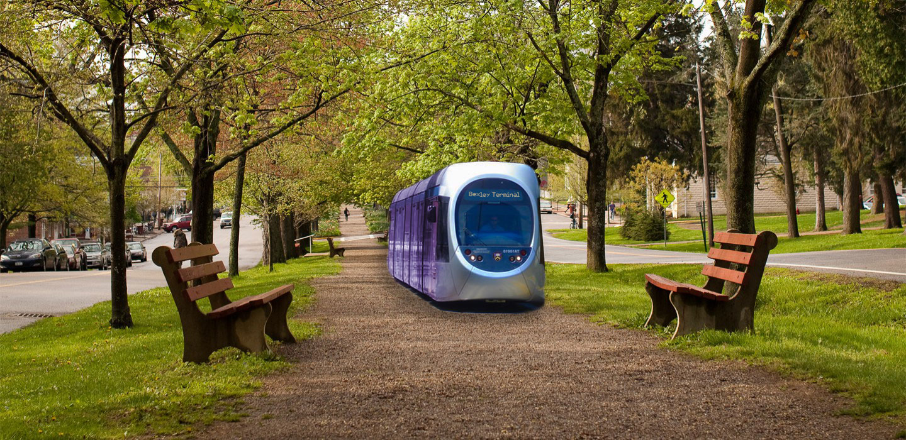
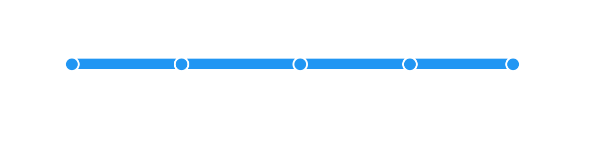
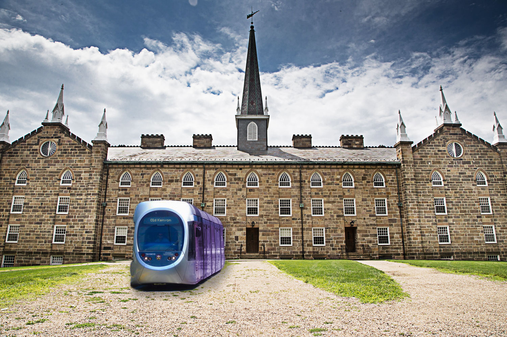

What if Middle Path had its own metro?
Good question. And at Rarefaction, we deal in good answers. We took the liberty of designing a brand new public articulated tram service running the length of Gambier's historic Middle Path. Because if the College is going to throw ungodly amounts of money at construction, they might as well throw it at us.
The Route

Starting at Bexley Hall, the proposed line runs straight through to its terminus at Old Kenyon, where passengers can transfer to KAC-bound funiculars. ADA-compliant stops will be constructed at McBride Loop, the Gambier Post Office, Rosse Hall/Peirce, and Old Kenyon.
Even the service's schedule is constructed with Kenyon's needs in mind. Two trams operate in opposite directions simultaneously during class change and meal hours, and all night on Fridays, Saturdays, and the occasional lit Wednesday.
